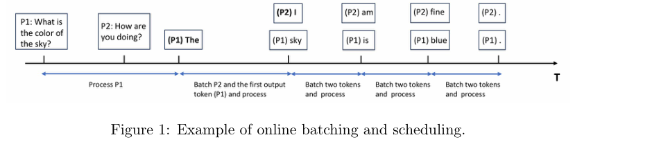
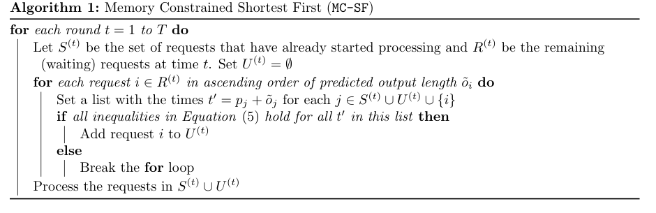
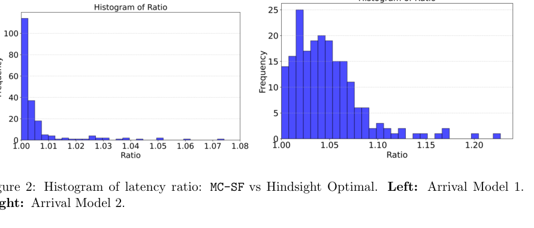
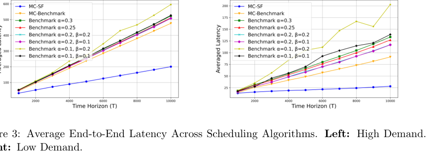
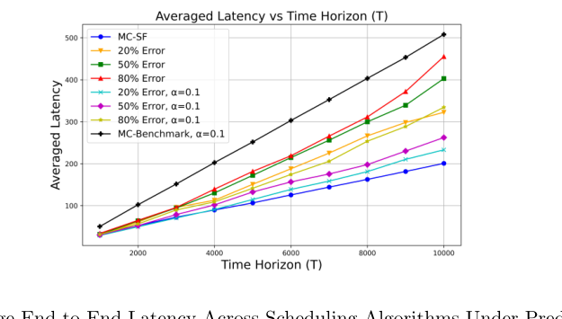

Online Scheduling for LLM Inference with KV Cache Constraints：中文翻译稿
摘要。本文从理论和算法角度研究带 KV cache 约束的 LLM inference batching 与 scheduling。LLM 推理逐 token 生成输出，每个请求在处理过程中持续占用并增长 KV cache。调度器既要减少端到端延迟，又要避免 GPU memory overflow。论文提出一个 hindsight optimal benchmark，用整数规划描述已知所有未来请求时的最优调度；证明在任意对抗到达下，不存在具有常数 competitive ratio 的确定性在线算法；随后提出 Memory-Constrained Shortest-First，简称 MC-SF。MC-SF 优先继续处理已开始请求，再按预测输出长度从短到长填充新请求，并在加入批次前检查未来 KV cache 可行性。理论上，在结构化到达条件下它具有常数竞争比；实验上，它在合成数据上接近 hindsight optimal，在真实 LLM conversation trace 上显著优于基于 vLLM 思路的启发式基线。
1 引言
LLM inference 的基本特点是自回归生成。一次 prompt 处理后，模型逐个产生输出 token，后一个 token 依赖前一个 token。为了避免反复计算历史 attention，系统保存每个历史 token 的 Key 和 Value，也就是 KV cache。这样可以把每步生成的计算从重复处理全部上下文，转为复用既有状态。
KV cache 同时带来新的瓶颈：它随 prompt length 和 output length 线性增长。一个请求越长，在完成前占用的 memory 越多；多个请求 batch 在一起时，所有 active requests 的 KV footprint 叠加，可能超过 GPU memory。传统 scheduling 只考虑 processing time、release time 或机器数，无法直接刻画这种动态 memory growth。

本文的目标不是提出一个工程系统，而是给 LLM inference scheduling 建立可分析模型。它把每个请求表示为 arrival time、prompt size 和 output length，并假设每个 batch 处理时间为一个离散时间单位。调度器需要在请求在线到达时决定何时启动请求；一旦请求启动，就持续处理直到最后一个 token 完成。
论文贡献包括：第一，给出带 KV cache memory constraints 的在线 batching/scheduling 数学模型；第二，用整数规划定义 hindsight optimal，用作离线金标准；第三，证明一般对抗到达场景下确定性在线算法无法获得常数 competitive ratio；第四，提出 MC-SF 算法并给出结构化条件下的理论保证；第五，在合成数据和真实对话 trace 上验证算法效果。
2 模型
系统只有一个 computational worker，可理解为单个 GPU 或联合工作的 GPU worker，memory limit 为 M。请求 i 到达时，调度器看到 prompt size \(s_{i}\) 和 output length \(o_{i}\)，实际算法可使用输出长度预测值 \(\tilde{o}_{i}\)。请求经历两个阶段：prompt phase 需要存储 \(s_{i}\) 个 prompt token 的 KV；token phase 中第 j 个输出 token 需要 \(s_i + j\) 的 memory。最后一个 token 完成后，该请求相关 KV cache 全部释放。
一个 batch 可以同时处理多个请求的下一个 token。如果请求还未开始，放入 batch 会生成它的第一个输出 token；如果请求已在进行，放入 batch 会生成下一个 token。论文假设 batch processing time 为一单位时间，且请求一旦启动就 non-preemptive，即必须连续处理 \(o_{i}\) 轮直到完成。
调度器的约束是任意时刻 active requests 的 memory sum 不超过 M。若 S(t) 是时刻 t 已启动但未完成的请求集合，\(o_{i}^{(t)}\) 是请求 i 已生成到的位置，则需满足 \(\sum_{i\in S(t)}(s_i + o_i^{(t)}) \le M\)。优化目标是最小化 total end-to-end latency，即所有请求 completion time 减 arrival time 的和。
3 Hindsight Optimal 与整数规划
为了评价在线算法，论文定义 hindsight optimal：假设调度器在时间开始前就知道所有请求的 arrival time、prompt size 和 output length。它不现实，但可作为最优下界。论文把它写成整数规划，变量 \(x_{i,t}\) 表示请求 i 是否在时间 t 开始处理。
目标函数最小化所有请求的完成延迟。约束包括：每个请求只能在到达后开始一次；任意时刻所有 active requests 的 KV memory 总量不超过 M；变量为二元变量。这个 formulation 把 non-preemptive execution、token-wise KV growth 和 GPU memory limit 放到同一个离线优化问题中。
这个 benchmark 的意义在于区分两类损失：算法结构本身不够好导致的损失，以及在线决策不知道未来请求导致的信息损失。在合成实验中，论文专门设计 all-at-once arrivals 和 online stochastic arrivals 来分别观察这两种因素。
4 MC-SF 算法与理论结果
在一般在线 adversarial arrivals 下，论文先给出负结果：任何 deterministic online algorithm 的 competitive ratio 至少是 Ω(√n)，因此不能期望一个在所有实例上都有常数竞争比的确定性在线策略。
在这个负结果之后，论文提出 MC-SF。算法思想很直接：每一轮先处理已经开始的请求，避免中途停滞导致 active KV cache 被长期占用；然后在 waiting requests 中，按预测输出长度从短到长尝试加入当前 batch。每加入一个新请求前，算法都检查未来若干 peak points 的 memory feasibility，确保后续 token generation 中不会超过 M。

MC-SF 需要对输出长度有上界预测 \(\tilde{o}_i \ge o_i\)。这不是纯理论假设，论文指出输出长度预测已是 LLM serving 的活跃研究方向。若预测是上界，算法能保守估计未来 KV footprint；若预测有误，实验中再加入 protection margin 来缓解 overflow。
理论分析集中在特殊结构化场景：所有请求同时到达、prompt size 相同，预测输出长度相对真实长度在常数因子内。在这些条件下，论文证明 MC-SF 的 total latency 相对 hindsight optimal 为 O(1)。这个结论不表示 MC-SF 在所有实际场景都有常数比，而是说明它的设计与最优调度结构相容，尤其适合 high-demand、许多请求同时等待的场景。
5 数值实验
合成实验使用 Gurobi 解整数规划得到 hindsight optimal。Arrival Model 1 中所有请求在 t=0 到达，消除了信息不对称；MC-SF 的平均 latency ratio 为 1.005，200 次实验中有 114 次完全达到最优，最差为 1.074。Arrival Model 2 中请求按 Poisson process 在线到达，平均 ratio 为 1.047，最差为 1.227，说明即使存在未知未来请求，算法仍接近离线最优。

真实数据实验使用 LMSYS Chatbot Arena/Vicuna conversation dataset，随机选取 10,000 个 conversations。每个用户问题作为 prompt input，每个 response word 作为 output token。系统模拟 Llama2-70B 在两个 A100 GPU 上推理，比较 MC-SF 与几类基线：α-protection greedy、α-protection β-clearing，以及带未来 memory check 的 MC-Benchmark。

在高需求 λ=50 时，所有算法延迟随请求量上升，但 MC-SF 的延迟增长斜率约为 1/6，而最强 benchmark 约为 1/2。在低需求 λ=10 时，MC-SF 的增长斜率约为 1/800，比最强 benchmark 小八倍以上。论文还报告 throughput，MC-SF 在过载 regime 下通常也有更高 service rate，说明延迟收益不是通过少处理请求换来的。

6 讨论与选题启发
论文最后强调三个后续方向。第一，输出长度预测和 scheduling 应联合设计。若预测器不仅给上界，也给可信区间或下界，调度器可以更激进地利用 KV memory。第二，模型可扩展到多个并行 worker，尤其是 memory capacity 和 compute throughput 异构时，调度还需要做 request-worker matching。第三，实际到达过程可能既有 stochastic regular traffic，又有 heavy-tailed outliers，需要 hybrid stochastic-adversarial 模型。
对本仓库方向的意义。这篇论文适合作为“KV-cache 约束下 agent workflow 调度”的理论基线。它把 KV cache 增长显式写入调度约束，并给出可对比的 offline optimum。若后续研究多智能体工作流，可以把每个 agent node 的输出长度预测、branch probability 和 cache retention decision 接入类似模型，进一步从 single request scheduling 扩展到 conditional DAG scheduling。
局限也很清楚：模型使用单 worker、离散时间、固定 batch time，并假设启动后 non-preemptive；真实 LLM serving 中 batch time 取决于 token 数、模型、硬件和 prefill/decode 分离。因而本文更像一个清晰的理论起点，而不是完整系统。
参考说明
参考文献保留在原 PDF 中。本文译稿主要覆盖摘要、引言、模型、整数规划 benchmark、MC-SF 算法、理论结论、实验结果和讨论部分。
论文问答
Q1：这篇论文试图解决什么问题？
它试图解决 LLM inference 在线 batching 时的 KV cache 约束问题。每个请求生成过程中持续占用并增长 KV cache，调度器既要减少延迟，又不能让 GPU memory overflow，而未来请求和输出长度通常未知。
Q2：有哪些相关研究？
相关研究包括 online scheduling、competitive analysis、Orca/vLLM 的 iteration-level batching、memory-aware scheduling、LLM output length prediction 和 hindsight optimal benchmark。论文的特点是给出理论不可能结果，同时提出实用在线算法。
Q3：论文如何解决这个问题？
论文先定义 hindsight optimal，用整数规划描述已知未来时的最优调度；再证明对抗到达下确定性在线算法不存在常数 competitive ratio。实际算法 MC-SF 优先继续已开始请求，再按预测输出长度从短到长加入新请求，并在加入前检查 KV cache 可行性。
Q4：论文做了哪些实验？
实验包括合成负载和真实数据，比较 MC-SF 与 FCFS、shortest-first、memory-oblivious 策略等。指标包括 latency ratio、平均/尾延迟、memory overflow 可行性、预测误差敏感性和不同 KV 容量下表现。
Q5：有什么可以进一步探索的点？
可以进一步研究随机到达或可学习分布下的更强理论保证，以及输出长度预测不确定性下的鲁棒调度。系统层面可把 MC-SF 与 prefill/decode 分离、prefix cache 命中和多 GPU placement 结合。
Q6：总结一下论文的主要内容。
这篇论文的主要内容是把 LLM decoding 调度形式化为一个带 KV memory 增长约束的在线问题。它说明最坏情况下在线调度很难，但 MC-SF 这类 memory-aware shortest-first 策略在实际负载中有效。